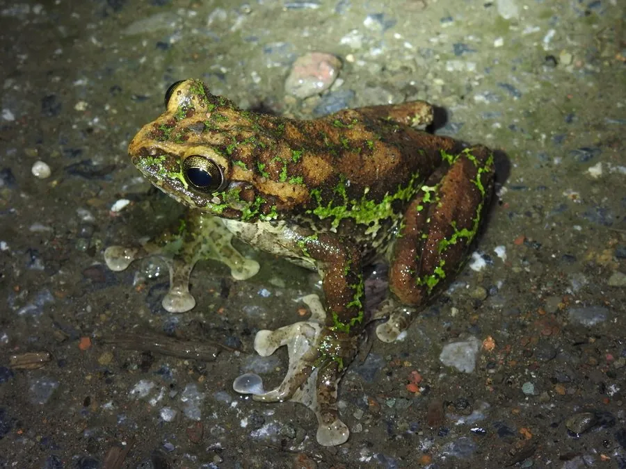

两栖动物 · 动物界
峨眉树蛙 Rhacophorus omeimontis

四川峨眉山一带的树蛙，背部绿色，趾间有宽蹼，繁殖期用后腿搅拌出泡沫卵团，挂在池边植物上。
- 分类
- 门脊索动物门纲两栖纲目无尾目科树蛙科属树蛙属
- 栖息环境
- 海拔 1000–2000 米的常绿阔叶林、竹林和静水池塘
- 地理分布
- 中国四川、贵州、湖北、湖南等地山地
- 保护级别
- IUCN 无危（LC）；中国“三有”保护动物
物种志
峨眉树蛙体长 6–8 厘米，雌蛙略大。头部扁平，吻端钝圆，眼睛大而突出；体背呈鲜绿色，散布少量深色斑点，腹部淡黄色；四肢细长，趾端有吸盘，趾间蹼宽大，适合在树丛间攀爬和短距离滑翔。
它分布于中国四川、贵州、湖北、湖南等地的山地，栖息于海拔 1000–2000 米的常绿阔叶林、竹林和静水池塘附近，白天伏在树叶或竹叶背面，夜间捕食昆虫、蜘蛛和小型无脊椎动物。繁殖期在 4–7 月，雄蛙在水边鸣叫，雌蛙用后腿搅拌出泡沫卵团，把卵产在池边植物或石头上，蝌蚪孵化后落入水中。峨眉树蛙的泡沫卵团能减少水分蒸发和天敌侵害，是它适应山地繁殖的重要方式，中国将其列入“三有”名录。
形态与习性
- 食性昆虫、蜘蛛和小型无脊椎动物
- 体长约 6–8 cm
- 繁殖泡沫卵团产于池边植物或石头上
- 活动节律夜行性，白天伏在树叶背面
- 攀爬趾端有吸盘，趾间蹼宽大
- 栖息常绿阔叶林、竹林和静水池塘附近
趣味知识
- 峨眉树蛙的泡沫卵团像一个白色小棉球，挂在池边植物上。
- 蝌蚪从泡沫团里孵化后，会直接掉进下方的水塘。
- 峨眉树蛙是峨眉山一带常见的树蛙，雨后夜晚鸣声尤其热闹。